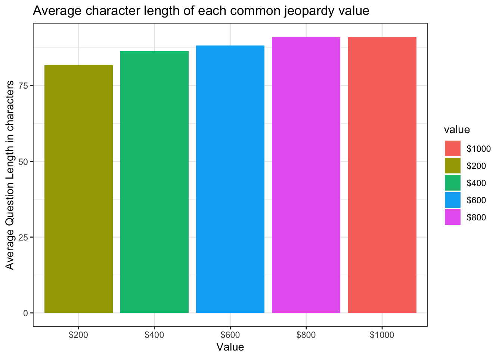
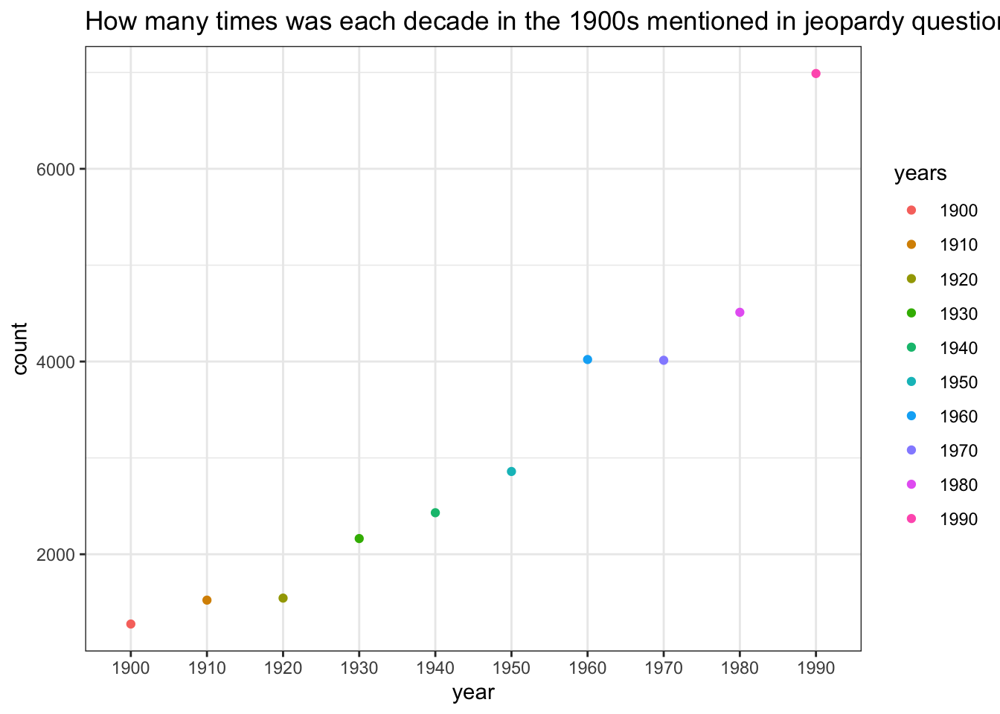

jeopardy_data %>%mutate(questionlength =str_count(question)) %>%#Elementgroup_by(value) %>%mutate(mean_question_lenngth =mean(questionlength)) %>%#Elementfilter(value =="$200"| value =="$400"| value =="$600"|value =="$800"|value =="$1000") %>%#Elementslice_head(n =1) %>%select(value, mean_question_lenngth) %>%ggplot(aes(x =reorder(value, mean_question_lenngth), y = mean_question_lenngth, fill = value)) +geom_col() +theme_bw() +labs(title ="Average character length of each common jeopardy value", x ="Value", y ="Average Question Length in characters")

This first plot shows us an interesting trend amongst the most common jeopardy question values. The higher the value, the more characters the question contains
yearcount <-lapply(c(0:9), getyear)yearcount <-unlist(yearcount)years <-c("1900", "1910", "1920", "1930", "1940", "1950", "1960", "1970", "1980", "1990")tibble(years, yearcount) %>%ggplot(aes(x = years, y = yearcount, color = years)) +geom_point() +theme_bw() +labs(title ="How many times was each decade in the 1900s mentioned in jeopardy questions", x ="year", y ="count")

This plot shows us a map of how much each decade in the 1900s is mentioned in jeopardy questions. It very interesting to see an almost exponentially increasing of the mentions as the decades get later
Warning in inner_join(tidy_questions, bing_sentiments): Detected an unexpected many-to-many relationship between `x` and `y`.
ℹ Row 375727 of `x` matches multiple rows in `y`.
ℹ Row 5711 of `y` matches multiple rows in `x`.
ℹ If a many-to-many relationship is expected, set `relationship =
"many-to-many"` to silence this warning.
sentiment n
1 negative 57996
2 positive 77667
Lastly we wanted to see if out of all these words we are looking at, do we have an overall positiv e or negative sentiment. Here with the totals we can see there are more positive words. A good way to put a positive note on the end of this project!